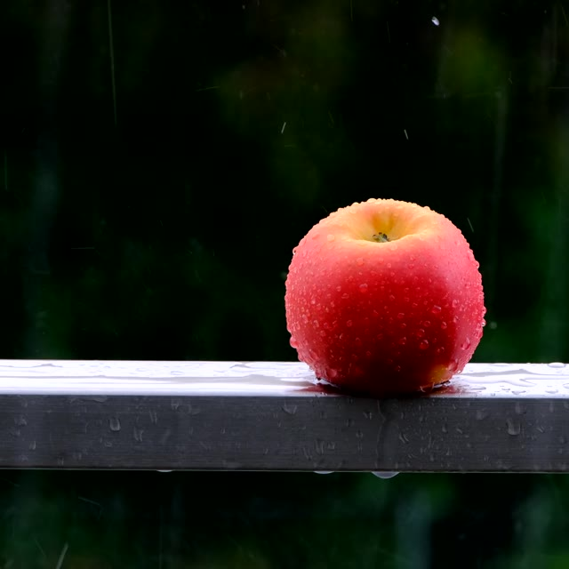
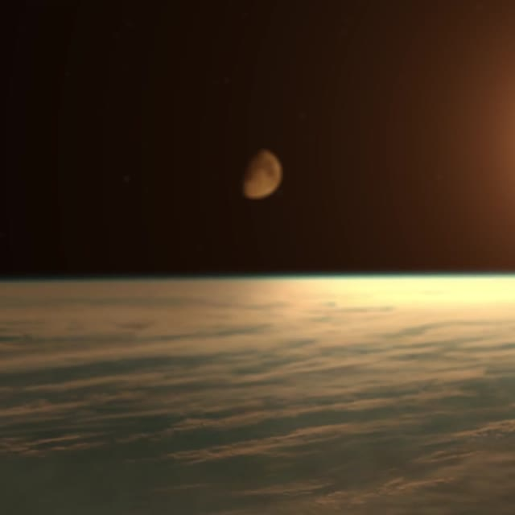
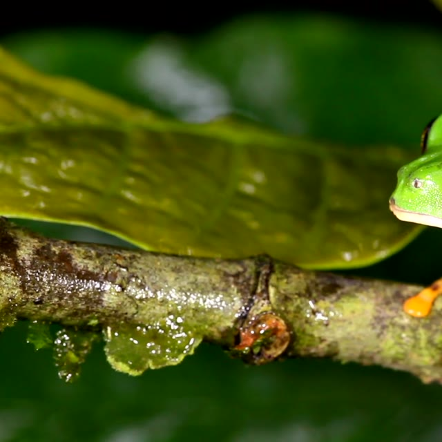
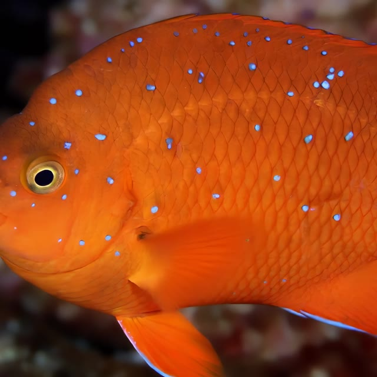
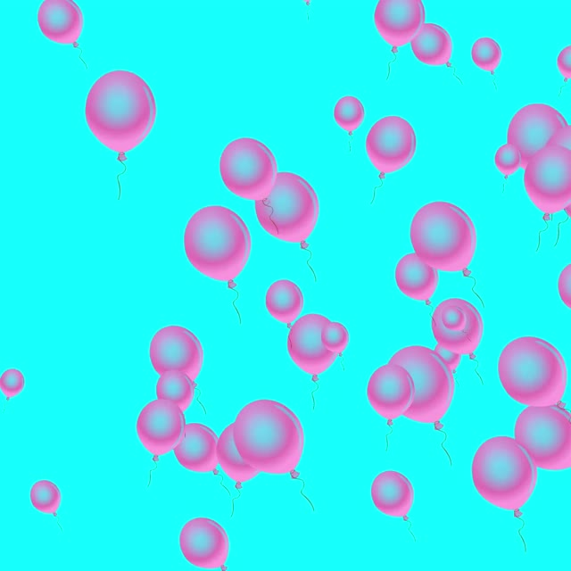

Şarkıyı dinle, her satırın çizimine bak. Uygunsa issue'daki KLİP ONAY kutusunu işaretle; video o zaman üretilir.






| 0.0–4.2 sn | Intro | Colours, colours, everywhere! |
| 4.5–6.3 sn | Verse | Red, red, a big red apple, |
| 6.4–8.0 sn | Verse | Blue, blue, a big blue whale, |
| 8.1–9.9 sn | Verse | Yellow, yellow, the yellow sun, |
| 10.0–12.7 sn | Verse | Colours, colours, so much fun! |
| 12.8–15.1 sn | Chorus | Look around, look around, |
| 15.2–16.8 sn | Chorus | What colours have you found? |
| 16.9–19.4 sn | Chorus | Look around, look around, |
| 19.5–21.8 sn | Chorus | Colours all around! |
| 21.9–23.7 sn | Verse | Green, green, a little green frog, |
| 23.8–25.8 sn | Verse | Pink, pink, a pretty pink flower, |
| 25.9–27.8 sn | Verse | Orange, orange, an orange fish, |
| 27.9–30.3 sn | Verse | Purple, purple, a purple balloon! |
| 30.4–33.0 sn | Chorus | Look around, look around, |
| 33.1–34.9 sn | Chorus | What colours have you found? |
| 35.0–37.4 sn | Chorus | Look around, look around, |
| 37.5–39.5 sn | Chorus | Colours all around! |
| 39.6–45.3 sn | Outro | Colours, colours, everywhere! |